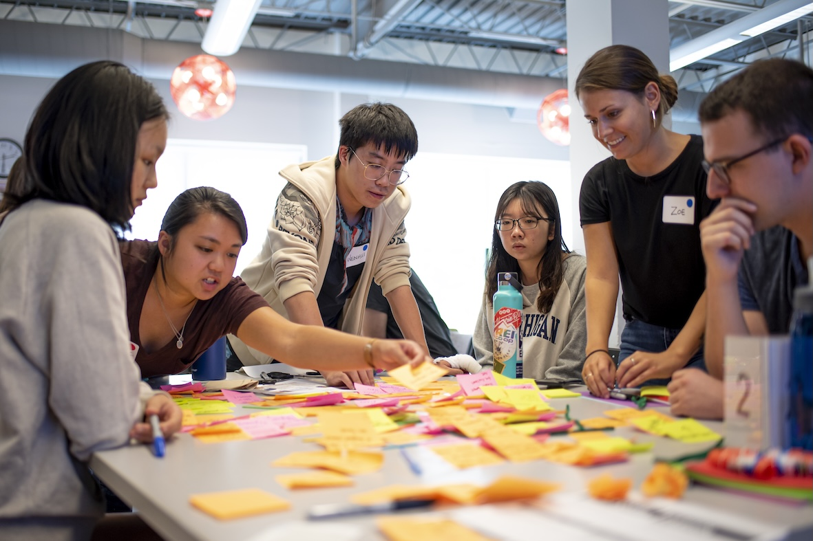
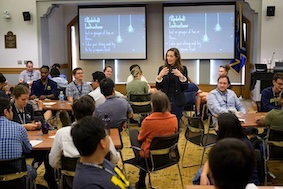

During Your Experience
Navigating the Active Phase
Once your project is underway, you will need to manage your work, communicate with your team and partner, and adapt to changes. This section provides guidance for navigating the active phase of your engaged learning experience.
Project Timeline
Engaged learning projects typically follow a structured timeline. While each project is unique, the following stages are common:
-
Explore
Browse current projects and partner organizations to see what kind of work is out there and what fits your interests.
-
Prepare
Sharpen your resume, clarify the skills you want to build, and meet with the Engaged Learning Office to scope your goals.
-
Match
Apply to the projects that interest you and get paired with a client team whose needs line up with your strengths.
-
Kick off
Meet your client, agree on deliverables and a timeline, and set the expectations that will carry the project.
-
In progress
Do the work, check in regularly with your client and faculty advisor, and adjust scope as you learn what's actually needed.
-
Share outcomes
Hand off your deliverables, present what you built, and reflect on what you'd carry into the next project.
Establishing Communication Practices
Consistent and accessible communication keeps teams aligned. We support partners in determining:
- How and when the team will communicate
- Which tools and channels will be used
- Who should be included in different conversations
- How decisions and action items will be documented
- How quickly team members should respond
- How feedback, concerns, and conflicts will be addressed
Practicing Ethical Engagement
Ethical engagement centers respect, reciprocity, equity, and accountability. Participants should consider who benefits from a project, who may be burdened by it, whose knowledge is valued, and who has a voice in decision-making. Ethical teams honor commitments, protect privacy, obtain appropriate consent, recognize community expertise, and communicate honestly about their capacities and limitations. They also remain attentive to power differences and work to ensure that partners are collaborators—not simply recipients of service.
Giving and Receiving Feedback
Constructive feedback supports learning and helps teams improve their work. Effective feedback is timely, specific, respectful, and connected to shared goals. We encourage participants to describe what they have observed, explain its impact, and identify possible next steps.
Receiving feedback also requires openness and curiosity. Participants can strengthen the process by listening carefully, asking clarifying questions, and considering feedback before responding. Creating regular opportunities for two-way feedback makes it easier to address concerns and recognize successes throughout the project.

Reflecting on Learning
Reflection helps participants connect experience with learning. Through individual and group reflection, participants can examine what happened, why it mattered, and how the experience may inform their future choices. Reflection might explore:
- Progress toward project and learning goals
- Contributions from different team members and partners
- Assumptions that were affirmed or challenged
- Ethical questions and power dynamics
- Responses to uncertainty, feedback, or conflict
- Connections between experience and academic learning
- Lessons that can inform future projects and partnerships
Workshops and Support
You'll participate in interactive workshops throughout your curriculum that focus on the professional skills needed to succeed in collaborative, project-based environments. Delivered in partnership with faculty, these workshops cover topics like client communication, teamwork, community engagement, design and innovation, and project management.
